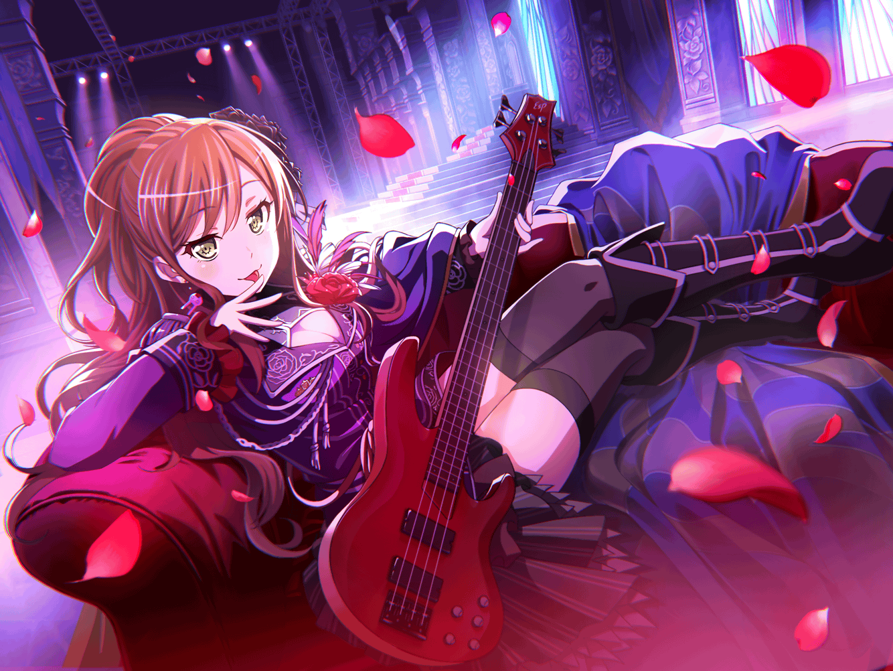

リサ
……思い返してみると、
アタシ達、今まで何も考えずに走ってきたけど……
リサ
ホント、色々なことがあったな～……
リサ
ファンの人にも支えられてきたし、
{{userName}}さんも見守ってくれてるし……
リサ
友希那も楽しそうだし
リサ
ん～！ これからも頑張らないとな♪
リサ
……あ、{{userName}}さん。
こんにちは～
リサ
こんな朝早くから会うなんて変な感じだね
リサ
……え？
まだ早朝なのに、なんでここにいるのかって？
リサ
ん～……
なんとなく早く来てみたかった……みたいな？
リサ
まあ、アタシのことはいいとして
{{userName}}さんは、なんでこんな早くに？？
リサ
……ああ、なるほど。
そうだよね、{{userName}}さんはスタッフさんだから、
この時間からライブの準備しないとだよね～
リサ
いつも本当にお疲れ様♪
リサ
……そういえばさ、
{{userName}}さんは、どうしてこの仕事してるの？
リサ
いやいや、似合ってないとかじゃなくて、
単純に気になったんだよね～♪
リサ
それとも、聞いちゃマズイ感じ？？
リサ
ふ～ん……秘密か
リサ
……え、アタシはなんでバンドをやってるのかって？
リサ
アタシはね……
リサ
最初は、元気がなくなった……というか、
そんな友希那を見守るためにバンドに入ったんだ
リサ
……なんとなく予想してた？
日頃のアタシを見ていれば、わかる？
リサ
ひ、日頃のアタシって、どんな感じなんだろう……
リサ
まあ、それは置いといて！
リサ
とにかくアタシは、
友希那を近くで見守れればよかっただけで、
真剣にバンドをやろうとは思ってなかったんだよね～
リサ
……あ、{{userName}}さんがビックリしてる！
リサ
意外だった？
ふふ、でも本当なんだな～
リサ
アタシは、友希那を放っておけなかったから、
バンドに入ったの
リサ
……でもね
リサ
みんなとバンドを始めて、友希那の笑顔が増えていって、
そうしたら、もっと友希那に喜んでもらいたい！
って思いが大きくなっていて……
リサ
それで、気づいた時には真剣になっていた
リサ
友希那を見守るのが目的だったはずなのに、
真剣にバンドに取り組むようになってたんだ
リサ
……なんで友希那を放っておけないのかって？
リサ
もちろん、大切な友達ってのもあるけど……
あの子、ああ見えて、すごく優しいんだ♪
リサ
……って、言っても
{{userName}}さんには、ピンと来ないかな？
リサ
そうだな～、例えばね……
リサ
前に、学校終わりにスタジオに向かうときに
あこと友希那と一緒に行ったんだけど……
リサ
その時に、あこがさ……アタシの指を見て、
ネイルが全部はがれちゃってボロボロになってる！？
って、驚いたの
リサ
そうしたら、それまで無関心な感じで歩いてた友希那も、
はっ！ として、アタシの指を見て……
リサ
ペースを守らないと指を壊すって、
言ってくれたの
リサ
あの時のアタシは、オーバーワークって言うの？
そういうので、練習のし過ぎでさ
リサ
なんだろうね……
心配されたのが、すごく嬉しかったんだ
リサ
あぁ、友希那はちゃんと、
アタシを見てくれてるんだって
リサ
いつも、アタシのことなんて、興味ないって感じでいるくせに
そんな事をされたらさ、
やっぱ……グッ！ ってくるものがあるじゃん？
リサ
友希那のために、
もっと頑張ろうっていう気持ちになるんじゃん？
リサ
ホント、友希那ってずるいよね～♪
リサ
……え？
友希那のことを大事に思ってるんだね？
リサ
……ん～、まあ、幼馴染みだしね
リサ
それに、最近は友希那だけじゃなくて、
バンドメンバーのみんなも大切に思ってるよ♪
リサ
……というわけで、アタシの話はおしまい！
リサ
これで、{{userName}}さんも
どれだけ友希那が優しいかわかったかな？
リサ
そっかそっか！
わかってくれてなによりだよ♪
リサ
あ、もうこんな時間経ってたんだ
リサ
{{userName}}さんと話すのに夢中で、
時間のこと、忘れちゃってた
リサ
ありがとう、楽しかったよ♪
リサ
……{{userName}}さんも楽しかったの？
リサ
あはは、ありがとう♪
リサ
それじゃ、アタシはそろそろ行くね
リサ
またね～♪